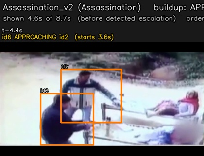
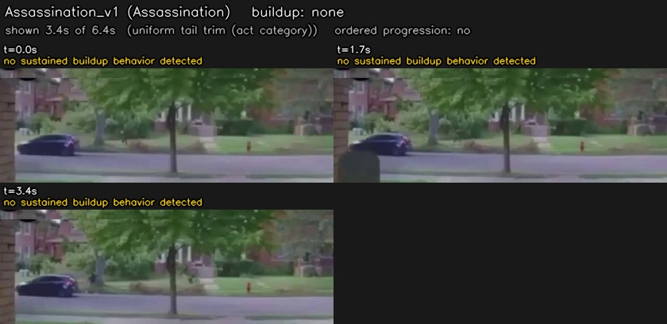
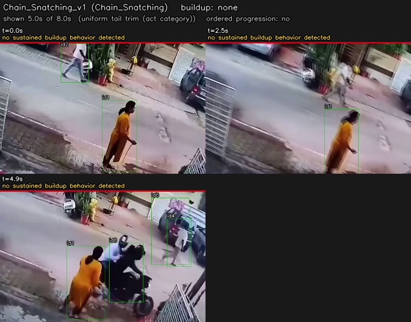
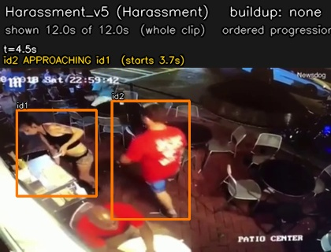
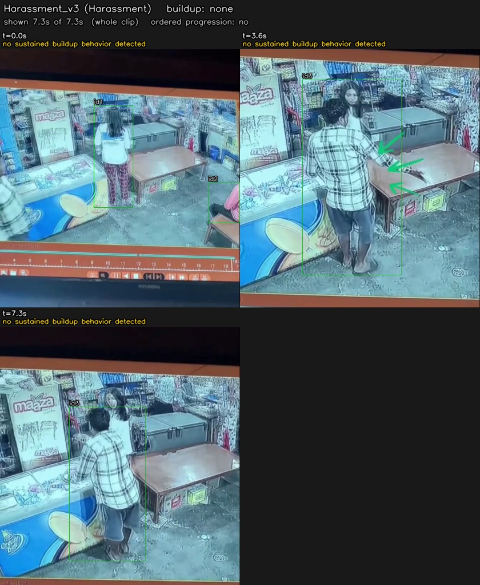
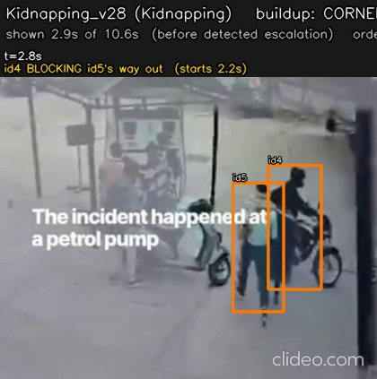
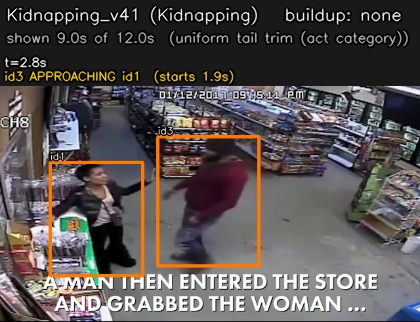
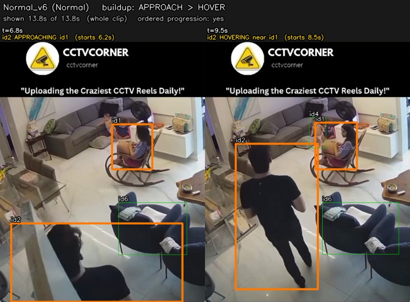
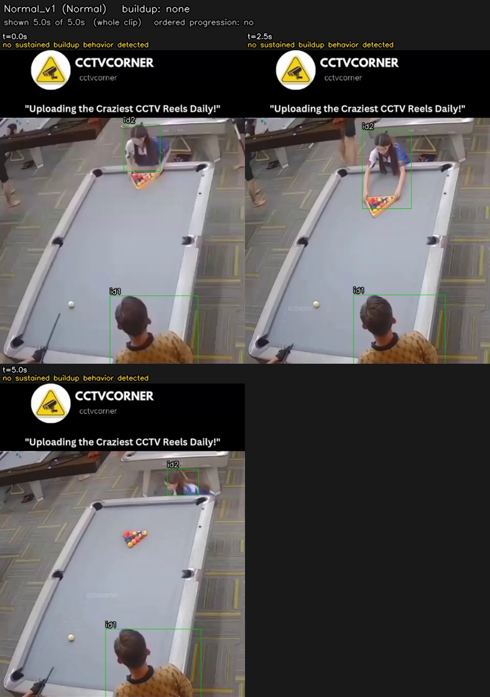
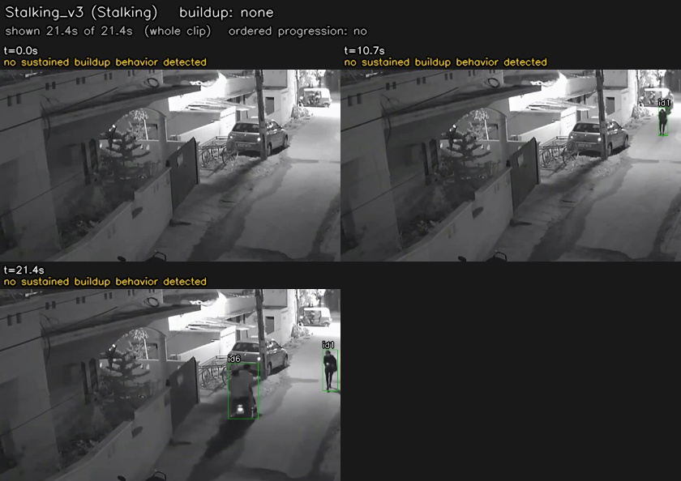

Pre-violence buildup: what happens before the act
12 clips, behaviors detected from person tracks (M8a) by the M9 gate. Violent footage is not shown: each video stops before the detected escalation.
How to read this
APPROACH distance shrinking · FOLLOW one person trails another, close, same heading · HOVER lingering next to someone standing still · CORNER one person stands between another and the nearest frame edge (the stand-in for an exit) · ESCALATION sudden relative-speed burst while close. A clip is flagged when FOLLOW, HOVER or CORNER occurs, or an APPROACH ends in ESCALATION. Ordered = the behaviors started in escalating order (approach, then follow/hover, then corner).
Limits. Everything comes from 2D positions of detected people: small or distant people are missed (see no pair), a false box (a chair, a scooter) can create a false behavior, hand-held cameras blur the motion signals, and the act's start was never annotated, so the video cut is a heuristic. Normal is the false-alarm baseline: compare every category with it. Rates are tuned on this same data; the review sheet is the independent check.
Categories
| category | clips | no pair | flagged | FOLLOW | HOVER | CORNER | ESCALATION | ordered | median buildup (s) | median start-to-escalation (s) |
|---|
| Assassination | 2 | 50% | 50% | 0% | 0% | 0% | 50% | 50% | 2.0 | 2.0 |
| Chain_Snatching | 2 | 0% | 0% | 0% | 0% | 0% | 0% | 0% | - | - |
| Harassment | 2 | 0% | 0% | 0% | 0% | 0% | 0% | 0% | - | - |
| Kidnapping | 2 | 0% | 50% | 0% | 0% | 50% | 50% | 50% | 1.6 | 1.6 |
| Normal | 2 | 0% | 50% | 0% | 50% | 0% | 0% | 50% | 7.1 | - |
| Stalking | 2 | 50% | 0% | 0% | 0% | 0% | 0% | 0% | - | - |
Thresholds used (body heights = bh, seconds = s)
approach_closing=0.3, approach_max_d=6.0, approach_min_drop=0.8, approach_min_s=1.0, burst_abs=2.5, burst_mad_k=4.0, burst_max_d=2.5, burst_min_s=0.2, burst_smooth_s=0.15, burst_vel_s=0.2, corner_activity_s=3.0, corner_blocked_speed=0.3, corner_max_d=2.0, corner_min_s=1.5, corridor=1.0, follow_behind=0.5, follow_cos=0.5, follow_max_d=3.0, follow_min_s=4.0, gap_fill_s=0.2, gap_s=0.5, hover_max_d=1.5, hover_min_s=3.0, kpt_conf=0.5, min_cotracked_s=1.0, move_speed=0.25, smooth_s=0.5, still_speed=0.15, vel_s=0.5Assassination

Assassination_v2 top flaggedid6 APPROACHING id2 3.6-5.3s; burst at 5.6s

Assassination_v1 random not flaggedno sustained buildup behavior detected
Chain_Snatching

Chain_Snatching_v1 random not flaggedno sustained buildup behavior detected
Harassment

Harassment_v5 top not flaggedid2 APPROACHING id1 3.7-5.4s

Harassment_v3 random not flaggedno sustained buildup behavior detected
Kidnapping

Kidnapping_v28 top flaggedid4 BLOCKING id5's way out 2.2-3.8s; burst at 3.9s

Kidnapping_v41 top not flaggedid3 APPROACHING id1 1.9-3.8s
Normal (false-alarm baseline)

Normal_v6 top flaggedid2 APPROACHING id6 6.2-7.4s; id2 HOVERING near id6 8.1-13.3s

Normal_v1 random not flaggedno sustained buildup behavior detected
Stalking

Stalking_v3 random not flaggedno sustained buildup behavior detected